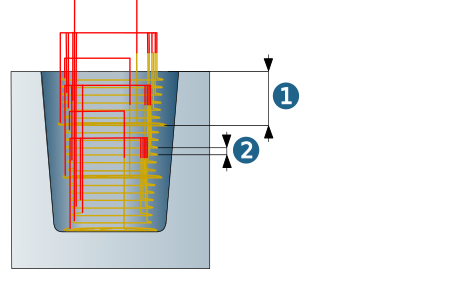
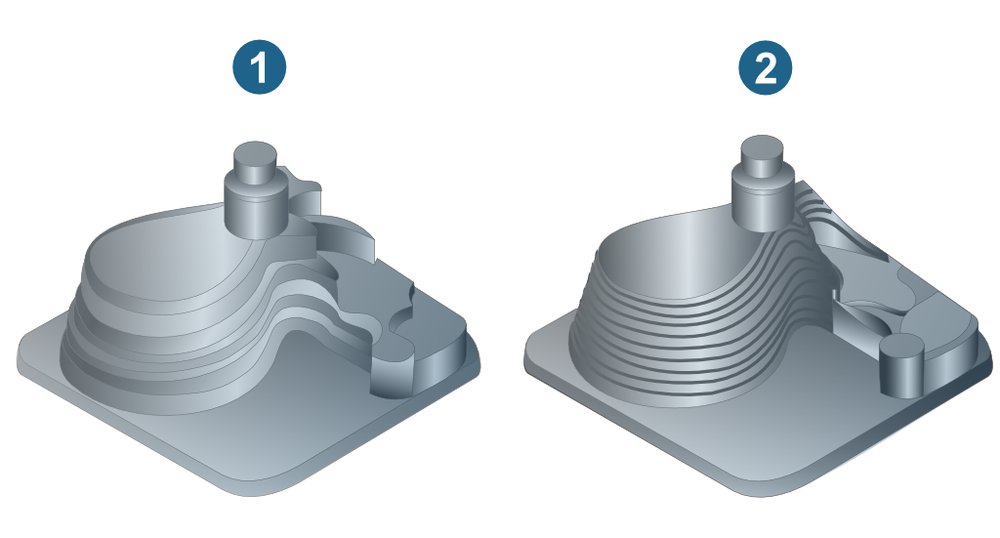
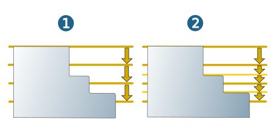
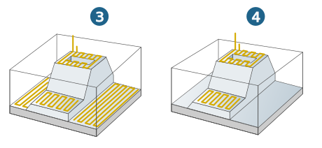

Parameters
Machining area
The vertical machining area is defined by the values for Top and Bottom of the component.
Top (3): maximum Z value in the current job.
Bottom (4): minimum Z value in the current job.
The area to be machined is normally recognized automatically. However, if the machining area is to be manually limited in the Z direction, use the Manual top or Manual bottom functions.
|
Specify the values for top and bottom directly on the model by clicking the icon. Manually defined values are not associative. If changes are made to the model geometry, the values will not automatically change as well. |
(1) Clearance plane, (2) Clearance distance
 |
Toolpath calculation
Note
If necessary for machining, a switch can be made from the defined horizontal stepover to a full cut when calculating the toolpath during the 3D Arbitrary Stock Roughing cycle.
Infeed
Allowance: when plane level detection is not enabled, this allowance only applies in the X and Y directions, not in the Z direction on the last machining plane. When the plane level detection is enabled, this stock allowance also applies to the Z direction.
Additional allowance XY: this additional horizontal stock allowance enables machining with different stock allowances for the bottom and side walls of the machining area.
Example 1: Roughing a pocket with a final horizontal stock allowance of 1 mm and simultaneous finishing of the bottom of the pocket (stock allowance = 0 mm).
Inputs: allowance = 0, additional allowance XY = 1.
Example 2: The bottom of a pocket should have a final allowance of 0.5 mm while the side walls should have a final allowance of 1 mm.
Inputs: Allowance = 0.5, Additional allowance XY = 0.5
Example 3: The bottom of a pocket should have a final allowance of 0.5 mm while the side walls should not have an allowance.
Inputs: allowance = 0.5, additional allowance XY = - 0.5.
Note
Stock allowance and the additional horizontal stock allowance can be defined as negative values if the following requirements have been met:
-
Allowance + Corner radius > 0.
-
Additional allowance XY + Tool radius - Corner radius > 0.
Max. step height: Enable if large axial infeeds are possible and, despite this, a continuous allowance is to be achieved. An initial downwards vertical stepdown (1) is executed. The remaining material on inclined walls is then removed from bottom to top according to the defined Max. step height (2). Valid values for the Max. step height parameter must be less than or equal to the Vertical stepdown. The actual step height may differ from the Max. step height.
Example calculation of the actual step height:
Vertical stepdown = 7, Max. step height = 2
7: 2 = 3.5, rounded up = 4.
7:4 = 1.75 = actual step height.
|  |
The strategy is particularly suitable for the high-performance machining of sloped walls and flat transitions.
Max. step height not enabled (1), Max. step height enabled (2).
|  |
Plane level detection
Off (1): The defined vertical stepdown is kept for each roughing level irrespective of the workpiece surface.
Automatic (2): If the defined vertical stepdown value is greater than the distance between two surfaces of the workpiece, the system automatically inserts an intermediate step with a smaller vertical stepdown for the planar surfaces around the entire workpiece circumference.
Smallest infeed: 0.25 mm/0.01 inch.
|  |
Two methods are available for optimized machining:
Optimized - complete (3): the machining area is first roughed with a constant feedrate. In a second, automatically generated roughing pass the rest material left on the plane-parallel surfaces is removed.
Optimized - planes only (4): only the plane-parallel surfaces inside the boundary are machined.
Planar surfaces on the same level as the top or bottom are not recognized in this mode. Therefore please increase/reduce the Top/Bottom settings accordingly.
|  |
Additional horizontal offset factor: The tool behavior can be modified by specifying an additional horizontal offset factor (recommended value 0.1 to 0.5). This yields better results, in particular when machining smaller planar surfaces with a larger tool.
Optimized infeeds (1) by way of smooth, stretched infeeds between the single equidistant cuts in the roughing level reduce the tool wear and tear and ensure smoother machine movements. The length (2) of the ramp-shaped link depends on the tool radius (3), which is automatically multiplied by a factor. If the ramp-shaped link cannot be inserted, a direct link is created and/or Fillet interior corners is executed if this option is selected.
 |
Additional parameters
Minimal stock removal: Value for the minimum material width between the stock and the model in order for material to be removed. If the material width is lower than the defined value, no material is removed. For values greater than 0, collision avoidance is automatically enabled, thus ensuring that the tool is continuously monitored against the tracked stock.
Recommendation for calculating the minimal stock removal: stock tolerance + machining tolerance + required minimum removal = Minimal stock removal. If the Minimal stock removal function is enabled, the Vertical stepdown value can be exceeded by up to 25%.
Finish pass all levels: If this option is enabled, it ensures the tool moves along the entire defined contour, even if no material is cleared. If there is still some rest material, this is cleared first and then the spring path is traversed. You should always enable this option if minor changes were made to the allowance between two machining passes.
Retract mode
The retract mode defines the Z level where the system executes horizontal infeed movements. The mode set is valid for all machining directions (incl. approach, retract and return movement macros) and for the profiles machined with them. Exception: Machining in zigzag mode without return macro.
Clearance distance (1): all retract and infeed movements are executed via the clearance distance. Starting and end positions of an infeed movement in rapid are displaced in Z direction in order to guarantee a collision-free linear infeed movement. The clearance distance is added to these positions.
Clearance plane (2): all retract and infeed movements are executed via the clearance plane.
 |
Safety
Clearance plane and clearance distance apply in the direction of the Z axis of the current frame.
 |
Clearance plane (1): Plane for rapid tool movements. Specification in absolute dimensions Define the clearance plane by right-clicking on the icon. Select a point and confirm the selection. |
Warning
Traversing movements on the clearance plane are not checked with regard to collisions. Therefore, this plane must be placed at a sufficient distance above the surface of the workpiece.
Clearance distance (2): Distance to the current toolpath to be milled. Above the clearance distance, infeed takes place as rapid in the Z direction (A); below the clearance distance infeed takes place at the Z feedrate (B).
(3) Top, (4) Bottom
|